Lumineux
Sa teinte claire réfléchit la lumière et agrandit visuellement les espaces, de jour comme sous les guirlandes.
Constructions et aménagements en bois clair
Stands de salon, décors de fêtes, espaces de repos et constructions : le bois clair donne vie à vos événements et à vos projets.
Atelier Bois Clair imagine, fabrique et installe des ouvrages en bois clair : stands de vente, décors pour les fêtes, espaces de repos, mobilier et même des constructions complètes.
Nous intervenons pour les festivals comme le FestiShill et le Shill and Groove, pour les fêtes nationales et locales, les fêtes de Noël et les fêtes pour enfants.
Notre matière première est toujours la même : un bois clair, lumineux et chaleureux, qui met en valeur ce qu'il abrite.
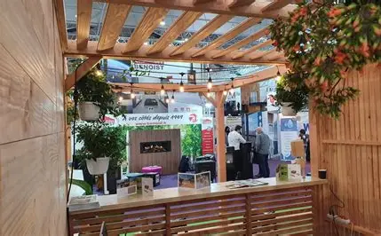
Sa teinte claire réfléchit la lumière et agrandit visuellement les espaces, de jour comme sous les guirlandes.
Il crée tout de suite une ambiance accueillante, idéale pour des lieux de fête, de vente ou de repos.
Les pièces se coupent, s'assemblent et se démontent facilement : un même stand peut être déplacé et réinstallé.
Matériau d'origine naturelle, il s'accorde avec les plantes, la pierre, les tissus et tous les décors.
Six domaines, une seule matière : le bois clair.
Stands de vente, comptoirs d'accueil, stands à étage, façades décoratives. Rapides à monter, ils s'adaptent à chaque marque.
Chalets, panneaux décorés, abris à tables et bancs pour les marchés et les centres commerciaux.
Espaces d'ateliers et d'animations, mobilier à bonne hauteur, décors colorés sur une base en bois.
Terrasses en lames de bois, pergolas, bancs et salons pour se poser pendant une fête ou un festival.
Bars circulaires, podiums, présentoirs, étagères et installations décoratives sur mesure.
Halles, pavillons, maisons et bâtiments à ossature bois : poteaux, poutres, planchers et charpentes.
Voici des exemples de ce que l'on peut construire avec le bois clair. Choisissez une catégorie, puis le modèle qui se rapproche de votre projet.
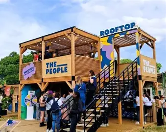
Stand · Festival
Une construction sur deux niveaux : un bar au rez-de-chaussée, une terrasse à l'étage accessible par un escalier, une toiture à claire-voie et un habillage en lames de bois. Les panneaux en façade portent les noms et les couleurs de l'événement.
Idéal pour : festivals, concerts, fêtes de quartier.
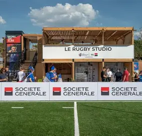
Stand · Événement sportif
Une structure ouverte en poteaux et poutres de bois clair, avec un grand bandeau en façade pour l'enseigne, un comptoir d'accueil au sol et une zone à l'étage réservée aux invités.
Idéal pour : tournois, inaugurations, événements d'entreprise.
Stand · Salon
Un stand chaleureux : toiture en pergola qui laisse passer la lumière, comptoir d'accueil habillé de lattes de bois, panneaux latéraux en bois clair et plantes vertes pour adoucir l'ensemble.
Idéal pour : salons professionnels, expositions, accueil du public.
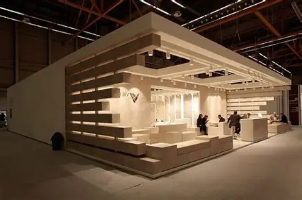
Stand · Salon
Une façade faite de planches horizontales décalées, qui forment à la fois le décor et des assises. L'éclairage est intégré dans la structure pour un rendu moderne et épuré.
Idéal pour : showrooms, salons, présentation de marques.
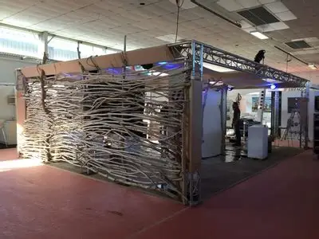
Stand · Décor naturel
Un stand original dont une paroi est entièrement habillée de branches et de rondins assemblés. Posée sur une structure légère, elle crée un effet naturel et très remarqué.
Idéal pour : salons, expositions, marques qui veulent se démarquer.
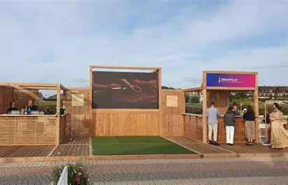
Événement · Plein air
Un ensemble complet : cabines en bois avec bar, plancher en lames, panneaux de séparation, et un grand écran encadré de bois pour diffuser des images ou des retransmissions.
Idéal pour : fêtes nationales, événements publics, retransmissions.
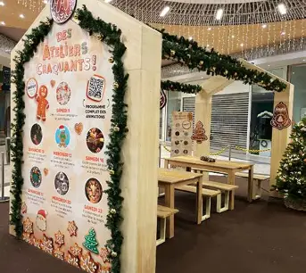
Fête · Noël et enfants
Un panneau d'animation décoré de guirlandes et de motifs de Noël, avec un abri en bois qui accueille des tables et des bancs à hauteur d'enfant pour les ateliers.
Idéal pour : fêtes de Noël, centres commerciaux, animations pour enfants.
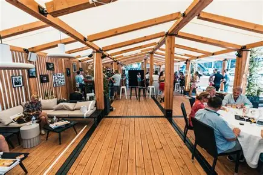
Aménagement · Repos
Une grande pergola en poutres de bois croisées, couverte de voiles blanches, avec un parquet en lames, des canapés, des tables hautes et des tables de restauration. Un vrai lieu de détente.
Idéal pour : places de repos en festival, restaurants éphémères, terrasses.
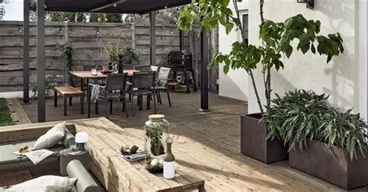
Aménagement · Extérieur
Une terrasse en lames de bois clair avec un salon extérieur : banquette-table basse, bancs, coin repas et jardinières. Les lignes simples se marient bien avec les plantes.
Idéal pour : places de repos, jardins, cafés et restaurants.
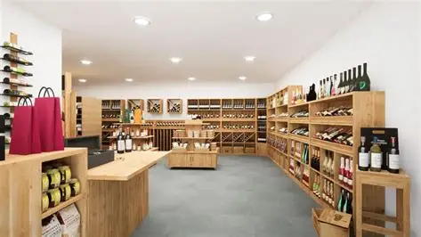
Aménagement · Boutique
Un magasin entièrement équipé en bois clair : étagères murales à casiers, tables de présentation, comptoir de caisse et présentoirs. Chaque meuble est pensé pour ranger et mettre en valeur les produits.
Idéal pour : boutiques, épiceries fines, concept stores.
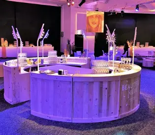
Mobilier · Réception
Un bar en arrondi construit en planches de bois clair, avec un plan de travail large et des étagères. Sa façade peut recevoir un logo ou un message pour personnaliser l'événement.
Idéal pour : soirées, réceptions, lancements de produits.
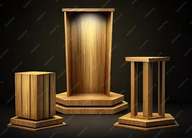
Mobilier · Présentation
Des socles de différentes hauteurs, une niche éclairée et un pupitre sur pied pour mettre en valeur un produit, une œuvre ou un orateur. L'éclairage souligne les veines du bois.
Idéal pour : expositions, remises de prix, vitrines, présentations de produits.
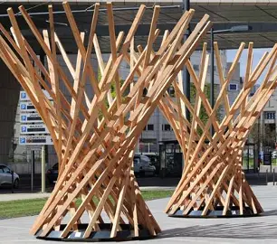
Décor · Installation
Des colonnes monumentales formées de lattes de bois qui se croisent, comme des sculptures. Elles marquent une entrée, une place ou le centre d'un événement.
Idéal pour : entrées de festival, places publiques, fêtes de ville.
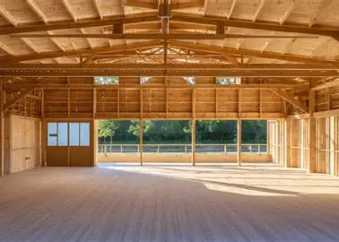
Construction · Halle
Une grande salle couverte, soutenue par des poteaux et une charpente apparente en bois clair, avec un parquet et de grandes ouvertures sur l'extérieur. Un volume lumineux et modulable.
Idéal pour : salles des fêtes, marchés couverts, mariages, repas de quartier.
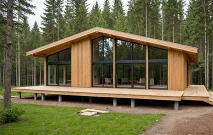
Construction · Pavillon
Une maison de plain-pied en bois clair, surélevée sur des plots, avec un toit à pente, de grandes baies vitrées et une terrasse en lames qui prolonge l'intérieur vers l'extérieur.
Idéal pour : maisons, bureaux, pavillons d'accueil, gîtes.
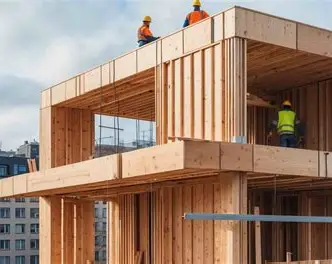
Construction · Ossature bois
Une structure à plusieurs niveaux faite de poteaux, de poutres et de planchers en bois. Les éléments sont préparés à l'avance puis assemblés sur le chantier, ce qui accélère la construction.
Idéal pour : bâtiments, extensions, étages supplémentaires.
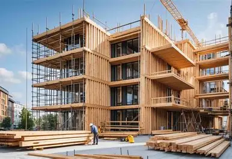
Construction · Immeuble
Un bâtiment de plusieurs étages dont les façades sont composées de panneaux de bois clair, avec des balcons et de grandes fenêtres. Le bois est un matériau léger qui se transporte et se pose facilement.
Idéal pour : logements, bureaux, bâtiments publics.
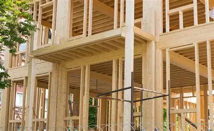
Construction · Charpente
Le squelette d'un bâtiment en bois : poteaux verticaux, solives qui portent le plancher et poutres horizontales. C'est la base de toute construction solide en bois clair.
Idéal pour : planchers, mezzanines, charpentes de toit.
Les photos sont des exemples d'inspiration : chaque projet est adapté à vos besoins, à votre lieu et à votre budget.
Du festival à la fête de Noël, nous installons des dispositifs en bois clair adaptés à chaque occasion.
FestiShill, Shill and Groove et bien d'autres : stands à étage, bars, scènes, espaces de repos pour le public.
Chalets décorés, tables et bancs à hauteur d'enfant, abris pour les ateliers et les animations.
Espaces en plein air complets : cabines, buvettes, terrasses et grands écrans encadrés de bois.
Type d'événement, lieu, date, nombre de personnes, budget et ambiance souhaitée.
Vous partez d'un modèle de la galerie ou d'une idée à vous, que nous adaptons.
Les pièces en bois clair sont découpées, assemblées et finies avant le jour J.
Nous montons le dispositif sur place, puis nous le démontons à la fin de l'événement.
Décrivez-nous votre projet, nous vous répondons rapidement.